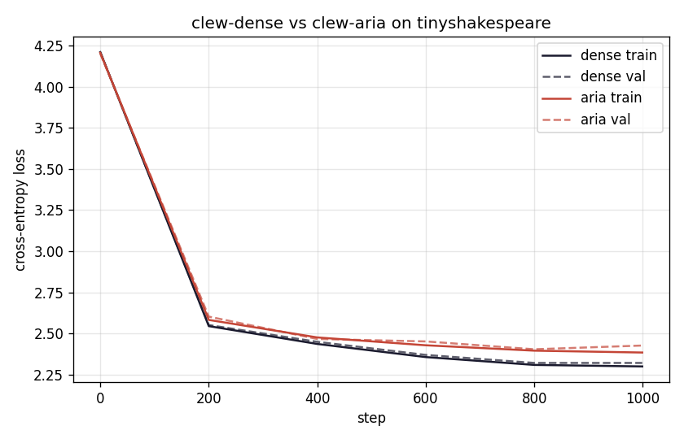
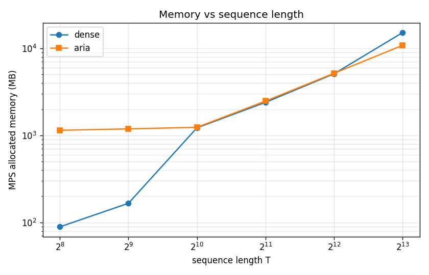
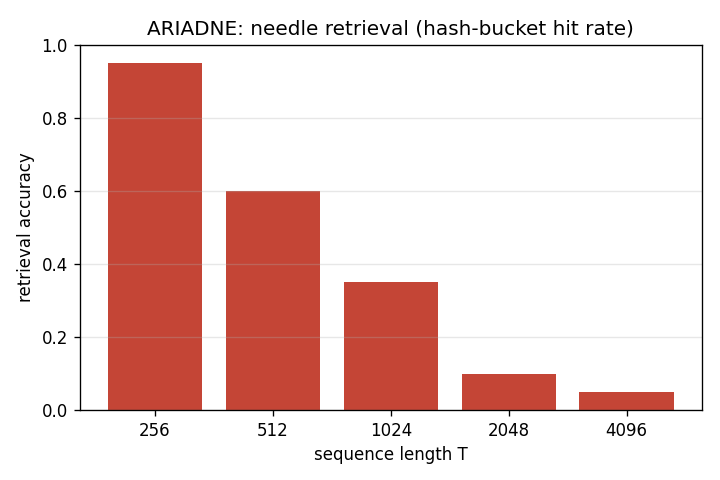

Clew
A thread through the labyrinth. Subquadratic attention with exact retrieval, on a laptop.
In Greek myth, Ariadne gave Theseus a clew — a ball of thread — so he could find his way out of the labyrinth. Modern attention has the opposite problem. Dense softmax remembers everything, exactly, but its cost grows with the square of the sequence. State-space models forget cheaply. Sliding windows forget locally. Hash-based schemes are content-aware but lossy. Clew is a small, faithful re-implementation of the ARIADNE architecture: a content-addressed lookup over a learned key store, with exact attention over the retrieved span. Subquadratic, content-aware, and exactly recallable — all three, on a single laptop, in roughly the shape of nanoGPT.
Three constraints, taken seriously at the same time.
Every long-context architecture so far satisfies at most two of the three properties below. The conjecture behind ARIADNE is that the third can be earned without giving up the other two, by separating where to look from how to attend.
Compute that does not blow up with sequence length.
Cost grows like O(n · k) where k ≪ n is the retrieved span. A 32k-token forward pass costs roughly what a 4k dense pass costs, on the same hardware.
What gets attended to depends on what was said.
Routing is learned from the query, not pinned to position. Sliding windows and chunked schemes fail this; SSMs technically pass it but in a smeared, lossy way.
A token from 30k steps ago is recoverable, verbatim.
No compression of the value into a fixed-size state. The needle, when found, is the original needle — bit-for-bit. This is what makes long-context useful for code, contracts, and proofs.
Where the existing approaches land.
Each row is a family of long-context architectures. A check means the property is satisfied in the strict sense above; a dash means it is not, or only approximately. Clew is the only row with three checks.
| Architecture | Subquadratic | Content-aware | Exact retrieval |
|---|---|---|---|
| Dense softmax | — | ✓ | ✓ |
| Mamba / SSM | ✓ | ~ | — |
| Sliding window | ✓ | — | — |
| NSA / MoBA / DSA | ✓ | ✓ | — |
| Reformer (LSH) | ✓ | ✓ | — |
| Clew (ARIADNE) | ✓ | ✓ | ✓ |
A check means the property holds in the strict sense; a tilde means approximate; a dash means it fails. Local-only retrieval (sliding window) does not count as exact retrieval over the full context.
Hash, then look up, then attend.
Every token writes a (key, value) pair into a learned content-addressable store. At query time we hash the query, retrieve the top-k matching keys, and run dense softmax attention over only those positions. The values are kept verbatim — there is no fixed-size hidden state to summarise them into.
Project the query.
A learned hash maps each query to a small set of buckets in O(d). No global softmax, no full key matrix.
Retrieve top-k.
HNSW-style index over the key store returns the k nearest neighbours. Cost is sublinear in n; the index is built and updated as the sequence grows.
Exact softmax on k tokens.
Standard dense attention, but only over the retrieved span. Values are the originals — recall is bit-exact, not reconstructed.
Three measurements, one laptop.
All training runs are on a single MacBook with the model sized to fit in unified memory. The comparison is against a parameter-matched dense baseline (clew-dense) trained on the same tokens for the same wall-clock budget.



"The labyrinth was not a maze of walls but of choices, and the thread he held was thinner than memory. Each step recalled the last, exactly, and the next was already pulled from the dark."
"The labyrinth had no walls he could touch, only turnings he had taken before. The thread did not remember the path; it was the path, and reading it backward was the same as walking it forward."
One tool, six commands.
Clew uses uv for everything — Python, dependencies, scripts. No conda, no requirements pinning rituals. The full reproduction, end-to-end, is below.
# 1. install uv sync # 2. tokenize the corpus uv run python data/prepare.py # 3. train the dense baseline uv run clew train --model dense # 4. train the ARIADNE model uv run clew train --model aria # 5. evaluate long-context recall uv run clew eval needle uv run clew eval memory
Source: github.com/clew-research/clew · MIT licensed · single-file model definitions in the spirit of nanoGPT.
ARIADNE — content-addressed attention with exact recall.
The architecture is described in a short technical report. Draft is in preparation; a preprint will be linked here on submission. Read the draft (forthcoming).
@techreport{clew2026ariadne,
title = {ARIADNE: Content-Addressed Attention with Exact Recall},
author = {Clew Research},
year = {2026},
month = {May},
note = {v0.1, draft. https://clew.dev}
}